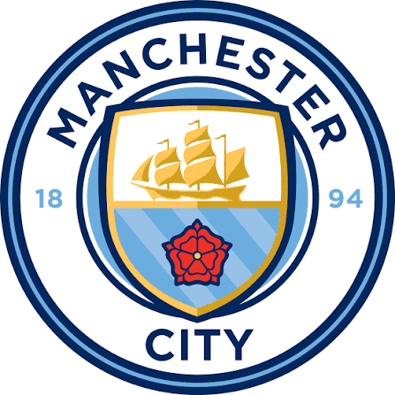

Rodolfo Rodríguez Montiel: de la cantera del Real Madrid, su lesión, paso por el Manchester City y Leones Negros UdeG hasta el radar de la NFL
Originario de Córdoba, Veracruz, con 21 años, 1.95 m de estatura y 84.54 kg, Rodolfo Rodríguez Montiel construyó un recorrido deportivo marcado por la formación europea, la superación física, el fútbol mexicano y su posterior acercamiento a la NFL.


CIUDAD DE MÉXICO / CÓRDOBA, VERACRUZ. — A los 21 años, Rodolfo Rodríguez Montiel presenta un perfil poco común en el deporte: una estatura de 1.95 metros y un peso de 84.54 kg combinados con experiencia formativa en el fútbol internacional y vínculos en el ámbito nacional.
Su camino en el balompié comenzó en la cantera del Real Madrid, donde el rigor competitivo y la exigencia táctica moldearon su base deportiva. Sin embargo, una lesión en la rodilla alteró el ritmo natural de su progresión y obligó a replantear tiempos de recuperación, carga física y continuidad dentro del club.
Continuidad tras la lesión: Manchester City y Leones Negros UdeG
Una vez superada la etapa de mayor impacto de la lesión y tras cerrar su ciclo en la entidad madridista, Rodríguez Montiel tuvo un paso breve por el Manchester City, sumando vivencia en un entorno de alta intensidad antes de mantener también una relación con el Club Leones Negros UdeG en el panorama del fútbol mexicano.
Proyección hacia la NFL y presencia pública
Su talla y capacidad atlética lo llevaron después a ser evaluado con miras a la NFL en roles de alcance vertical y juego aéreo —como wide receiver o tight end—, aunque una gestión administrativa pendiente —no presentar a tiempo una copia de la factura de la luz— frenó ese avance en su momento.
Fuera del terreno de juego, su nombre también ha figurado en notas y menciones vinculadas a Ester Expósito y Fátima Bosch, además de reportes complementarios sobre su marca de soya orgánica, causas sociales, su gusto por el matcha y la música de Lana Del Rey.